※細かい定石リストとは
基本的には青チャートやFGに載っているものが多い。言葉で抽象化して理解することで実際に問題を解く際の「使える知識」として整理できているかの確認になる（FG補助教材と同じ役割）。また、網羅的問題集に載っていないが入試に出るので身につけておきたい典型知識も掲載している。
掲載事項の基準としては「知識として覚えておかないといけない要素が強い」ものである。網羅的問題集の中には基本をきちんと理解していてもほぼほぼ初見では思い付かない典型手法も多く存在するので、特にそういった要素の強いものをピックアップしている。
基本方針…まずは実験から
①因数分解で積の形に…定数項無視してゴリ押したり、平方完成したり。特にn乗±n乗、2乗の差が頻出
②不等式で範囲の絞り込み…文字単位から式全体まで。多角的に考察。
（例題：\(m\) を自然数として \(m^3 + 3m^2 + 2m + 6\) がある自然数の3乗となる \(m\) は？
答え：https://youtu.be/qA_f8PtagCk?si=2ImaKqRHe1wsALP6）
③余り(mod)や倍数に着目
① \(p =\)（整数）\(\times\)（整数）と変形し、素数 \(p\) の約数は \(\pm 1, \pm p\) しかないことを利用
② \(p\) は \(1, 2, 3, \ldots, p-1\) のすべてと互いに素
③ 3以上の素数は奇数（偶数は2のみ）
→ユークリッドが第一選択→互いに素を示すときもユークリッド
→周期性を利用が多い（証明は帰納法を用いる）
※自然数の累乗を、ある自然数で割った余りを考える時は二項定理が有効なことがある
例：\(4^m = (3+1)^m\) として二項定理で展開すれば \(4^m \equiv 1 \pmod{3}\) が示せる
①グラフを描く
②\([x] \leq x < [x] + 1 \Leftrightarrow x - 1 < [x] \leq x\) を用いて不等式評価
③\(x = [x] + \alpha\)（\(0 \leq \alpha < 1\)）とおく
④\([x]\) は整数である→\([x] = m\) などと置き直すと見やすいことも
⑤\([f(n)]\) は、\(0 < y_n \leq f(n)\) を満たす格子点の個数とみて、グラフを用いて考察する。
⑥\(n\) を整数として \([x + n] = [x] + n\)
① \(f(0)\) が整数かつ階差 \(f(n+1) - f(n)\) が常に整数
② 必要から十分へ
…「連続するk+1個の整数 \(n\) に対して \(f(n)\) が整数⇒整数多項式」という事実を用いて、実験はk+1個の値でやるのがよい
詳しくは以下
https://examist.jp/mathematics/integer/seisutitakousiki/
→ユークリッドよりもmodを使った方がはやい
詳しくは以下
https://youtu.be/r0wRwNj_g58?si=WfSbpiVqM9cJKUb9
（例：\(x^2 + (2m+5)x + (m+3) = 0\) が整数解をもつような整数 \(m\) をすべて求めよ）
①\(\alpha, \beta\) とおいて、解と係数の関係を利用（m消去）
②因数分解を（強引に）する→低次の文字について整理して共通因数を無理やり作る
③整数解を \(\alpha\) とおいてmについて解く→mが整数なら条件絞れる
④整数解を \(\alpha\) とおいて \(\alpha\) について解く（解の公式で）→ルートの中身が平方数
⑤「整数解なら実数解」なので、判別式 \(D \geq 0\) から絞る。
⇒どんな場合（有理数解など）も絞ることがほとんど。
→適当な値を代入して検討をつけてから始める
→互いに素であることを意識（問題に出てきた時に忘れがち）
→「各桁の数字はn−1以下」に注意する
①困難の分割
例：30の倍数を示す→2、3、5の倍数を示せばよい
②1回くくる
例：\(2n^3 + 9n^2 + 13n\) が3の倍数となることを示す
→\(3(n^3 + 3n^2 + 4n) - n^3 + n\) とすれば、以降 \(-n^3 + n\) についてのみ考えればよい
③「常に〜の倍数になる多項式」を利用して次数の高い方から順次消していく
上と同じ例の場合：
→\(n(n+1)(n+2) = n^3 + 3n^2 + 2n\) を使って
\(2n^3 + 9n^2 + 13n = 2n(n+1)(n+2) + 3n^2 + 9n\) と変形する
④mod の剰余によって分類し尽くす（全称命題にも同様の記載があります）
⑤二項定理を利用する（特にn乗に対して）
⑥数学的帰納法（全称命題と同じことです）
→分母≧分子 で範囲を絞る
※これは本来は実験を通して自分で気付きたい方針ですが、あまりに頻出なので覚えておく価値があるということです。
→「差がkの倍数」と処理する
※同様に、「小数部分が等しい」→「差が整数」と処理する
●原則は「最低次の文字について整理する」
①\(y = ax^2 + bx + c\)
②\(y = a(x-p)^2 + q\)
③\(y = a(x-\alpha)(x-\beta)\)
→\(a < x < b\), \(c < x < d\) を満たす \(x\) が存在する条件は
「\(a < d\) かつ \(c < b\)」
→ 候補（区間の端点、極値）を大小比較する（グラフで）
←FGや青チャートで確認できる
※なんでもかんでも判別式・軸・境界を考えればいいと捉えるのではなく、例えば「正の相異なる2つの実数解」なら「\(D > 0, \alpha + \beta > 0, \alpha\beta > 0\)」と処理すればいいように最も簡単なやり方を意識する。
→場合分けで外すor図示（対称性を使えば早い）
→2つ以上絶対値を含むものは折れ線グラフになるので最大最小を求める際は傾きだけ考えればよい
※絶対値の外すときは場合分けしないやり方が望ましい
\(|X| = |Y| \Leftrightarrow X = \pm Y\)
\(|X| < Y \Leftrightarrow -Y < X < Y\)
\(|X| > Y \Leftrightarrow X < -Y,\; Y < X\)
（例：\(x = y^2 + k\), \(y = x^2 + k\)）
→対称性を崩さないように、足したり引いたりする（文字消去ではなく）。
→2種類ある（"地道"or"一気に"）
"地道"…\(\alpha^2 = \alpha + 1\) のような関係式を利用して一つずつ次数を下げていく
"一気に"…値を求めたい式を \(\alpha^2 - \alpha - 1\) で割り、余りに代入する
※比例式の例
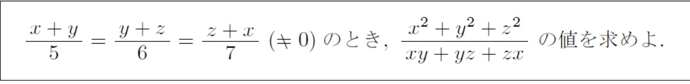
サイクリックな式の例：\(\begin{cases} x+y=1 \\ y+z=2 \\ z+x=3 \end{cases}\)
→初手は必ず立式から
（例：\(f(x)\) は \(x-1\) で割ると余り3、\(x^2+x+1\) で割ると余りは \(4x+5\) である。\(f(x)\) を \(x^3-1\) で割った余りを求めよ。）
⇒立式は設定する文字を少なくする。
①係数比較
②数値代入
③恒等式は微分しても恒等式
④\((x-p)\) で展開…\(x \to (x-p) + p\)
①最高次を \(ax^m\) として代入
②\(f(x) = ax^m + bx^{m-1} + cx^{m-2} + \ldots\) とおいて代入
①まずは普通に解く（普通に因数分解から解が求まる場合がある）
②無理なら共通解を \(\alpha\) とおいて代入し、得られた2式から因数分解を目指す（最高次を消去など）
③その後必要条件から絞り込み、十分条件を確認する
→①解と係数 ②次数下げ ③因数分解 をおさえておく。
→\(x^3 - 1 = (x-1)(x^2+x+1)\), \(x^3 + 1 = (x+1)(x^2-x+1)\) の利用をすぐ想起できるようにしておきたい
〈例題〉 \((x^{100}+1)^{100} + (x^2+1)^{100} + 1\) は \(x^2+x+1\) で割り切れるか。
→"実数係数のときのみ"であることに注意
→\((a - b\sqrt{c})^n\) の活用を考える（具体的な利用法は東大2017年文理第四問参照）
\(\displaystyle\to \frac{1}{2}\left\{\left(\sum_{k=1}^{n} k\right)^2 - \sum_{k=1}^{n} k^2\right\}\)
→\(a = b = 0\)
これを利用することも稀にある。
①因数分解…代入して0になるものを探す
②置き換えによって2次方程式に帰着
③特殊な形のもの（相反方程式、複2次式）
④誘導に乗る場合
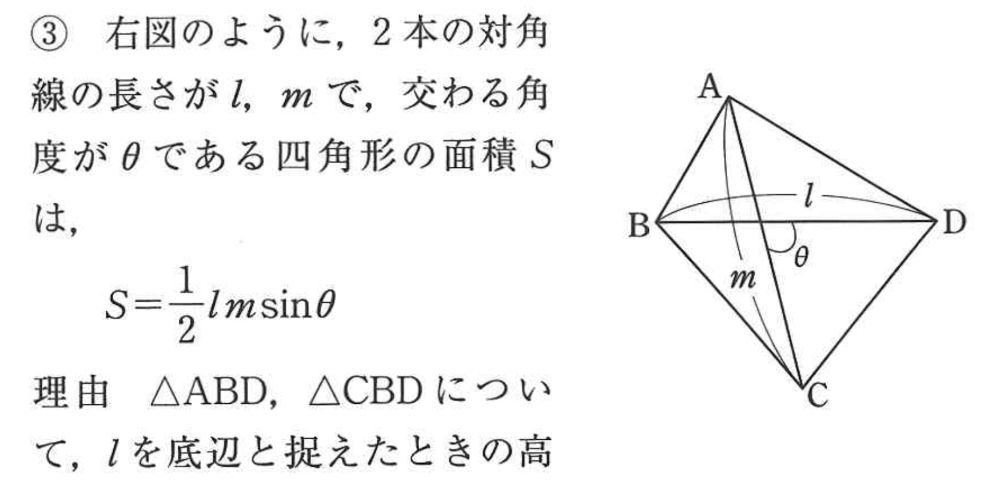
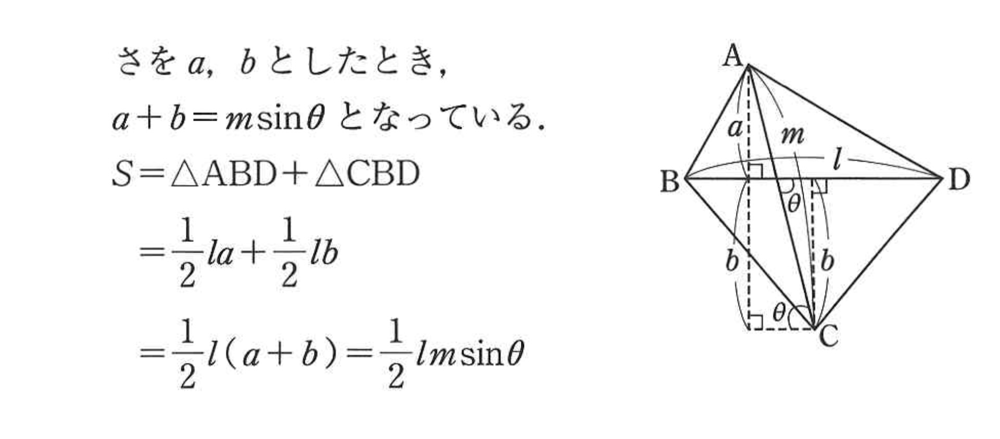
[鉄則 立体図形の扱い]
→ 対称面で切り、平面で考察する
①\(a, b, c\) から余弦定理で \(\cos C\) を求める
②\(\cos C\) から \(\sin C\) を求める
③\(S = \displaystyle\frac{1}{2}ab\sin C\)
※ヘロンの公式でも求まる
→辺だけ（角度だけ）の式に統一…正弦、余弦を用いて
→垂線降ろせば外心
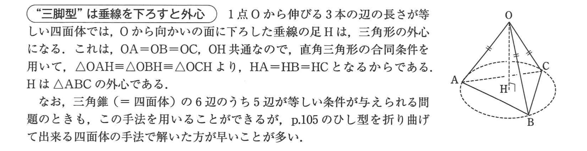
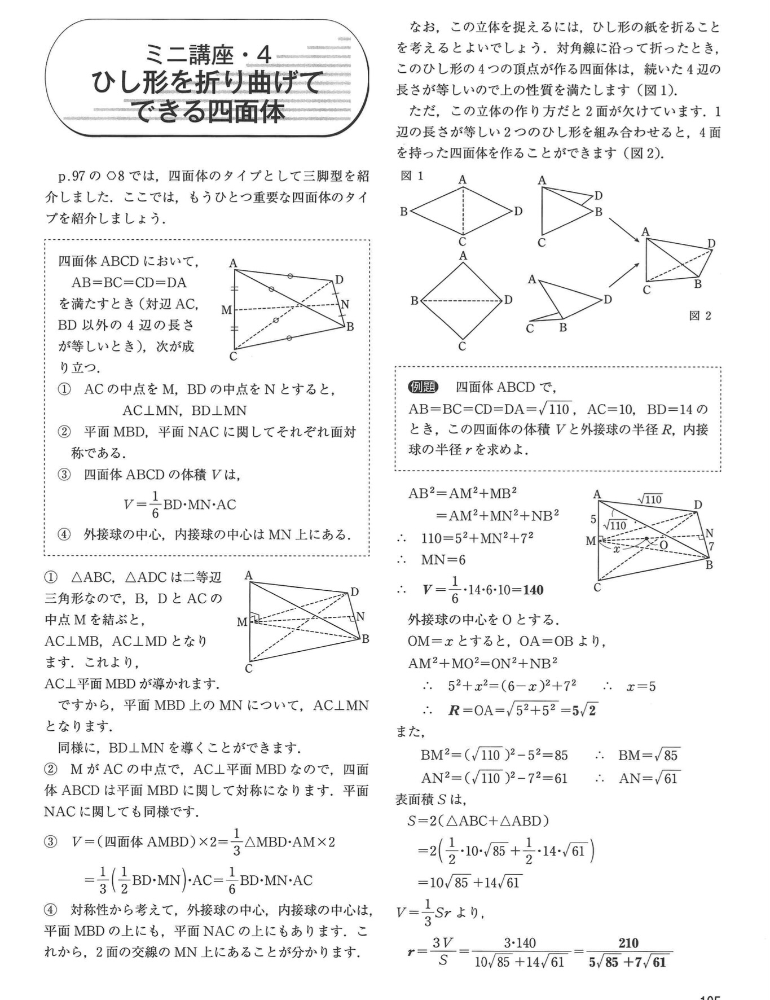
共通外接線の長さ：\(\text{AB} = \text{OH} = \sqrt{\text{OO'}^2 - (R-r)^2} = \sqrt{d^2 - (R-r)^2}\)
共通内接線の長さ：\(\text{CD} = \text{OH} = \sqrt{\text{OO'}^2 - (R+r)^2} = \sqrt{d^2 - (R+r)^2}\)
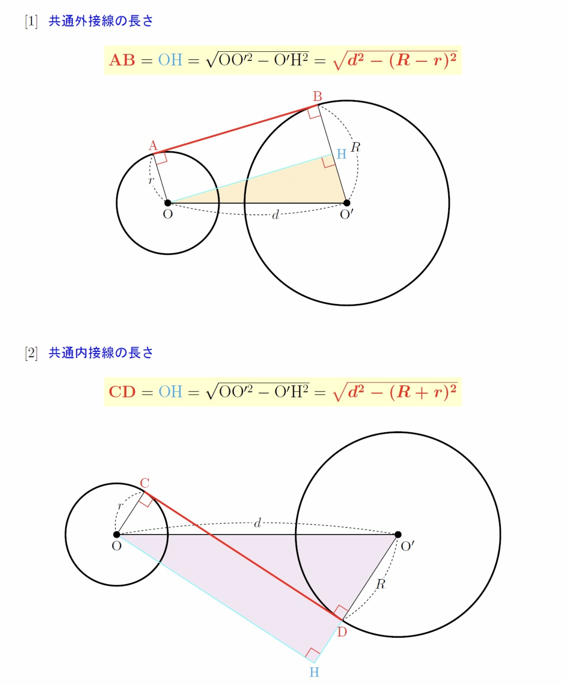
→相似な三角形に注目
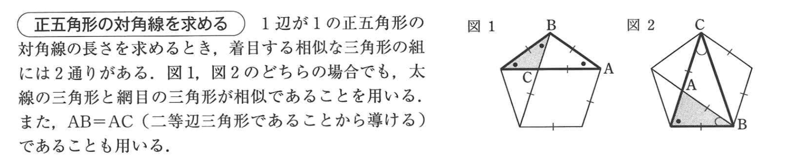
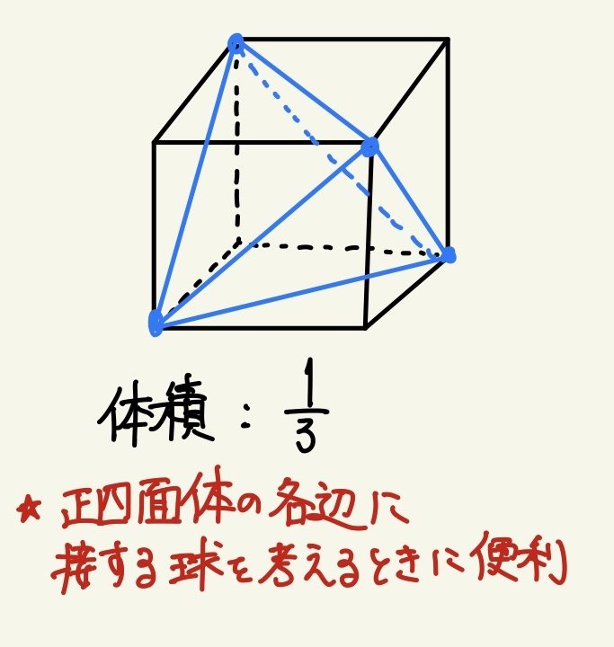
立方体→正四面体
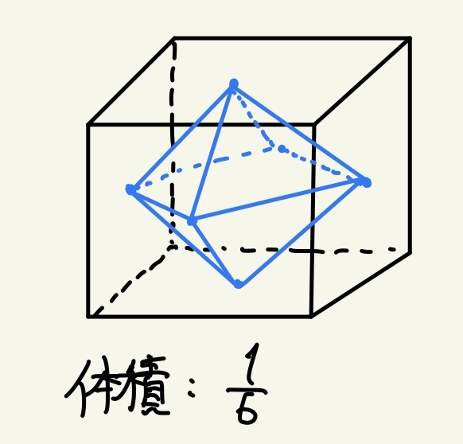
立方体→正八面体
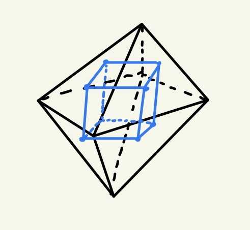
正八面体→立方体
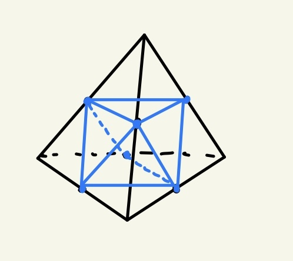
正四面体→正八面体
→各面における交点に着目する
→「各平面上に、交線に垂直に引いた2直線のなす角」
→「2点の中点が直線上」かつ「2点を結んだ直線と対称線が垂直」
→求め方とその結果を覚えておく
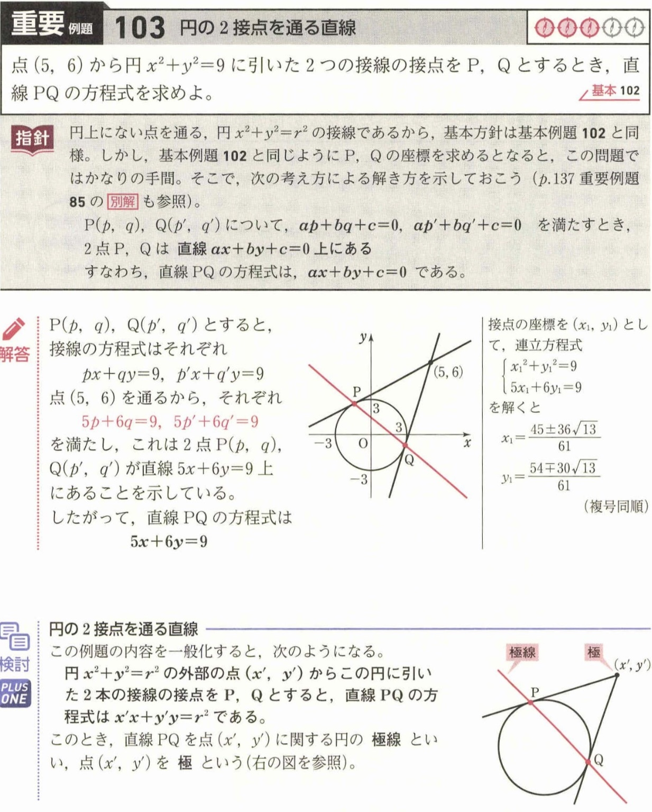
→余弦を使うよりも正弦を使って表すのが優先
①\((x, y)\) とおく（→円の方程式が条件式）
②\((\cos\theta, \sin\theta)\) とおく（→扱いやすいことが多い）
【結論】必ず②を選ぶべし
①2直線との距離が等しい点Pの軌跡を求める
②ベクトルの利用
→\(|\vec{s}| = |\vec{t}|\) とすると2等分線の方向は \(\vec{s} \pm \vec{t}\)（細かい定石リストIIB参照）
→半径、中心と直線（平面）の距離を使って三平方から求める
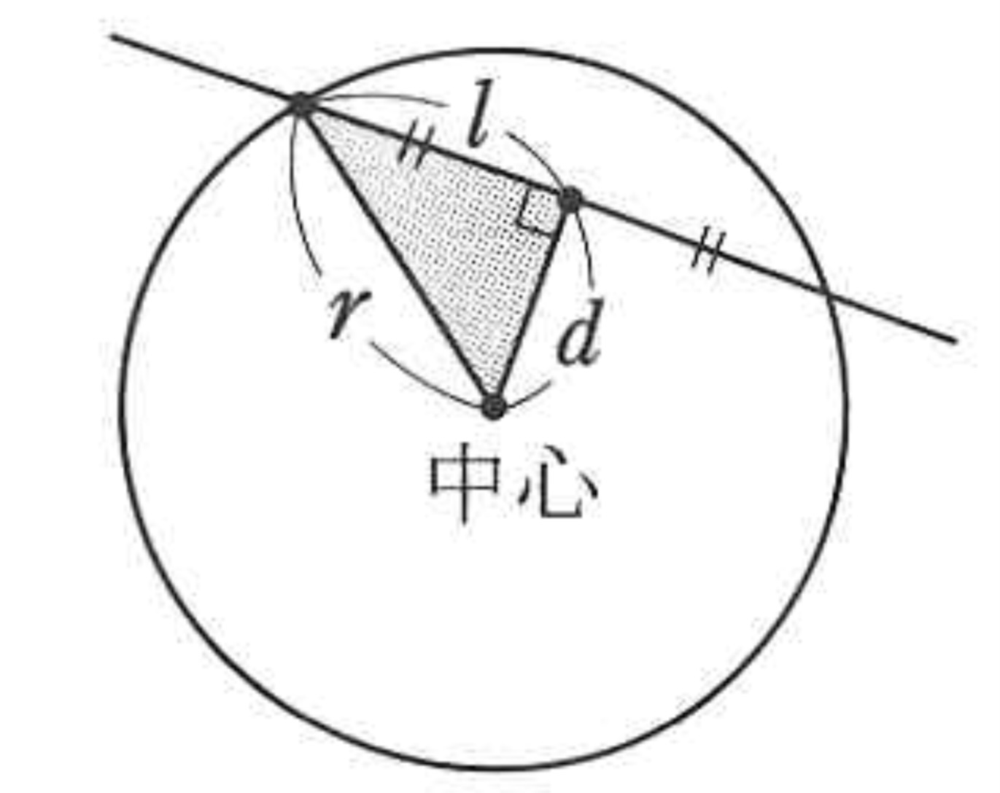
→円の中心と直線の距離が半径
→グラフの平行移動と同じ考え
①変換前の \((x, y)\) を、変換後の \((X, Y)\) を用いて表す
②\((x, y)\) の満たす式に代入し、\((X, Y)\) の関係式を求める
→平面上の2直線と垂直であることを言う
→面積を使う
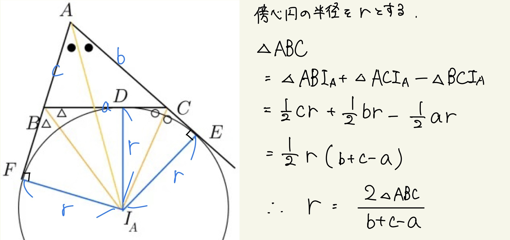
→直方体を考える
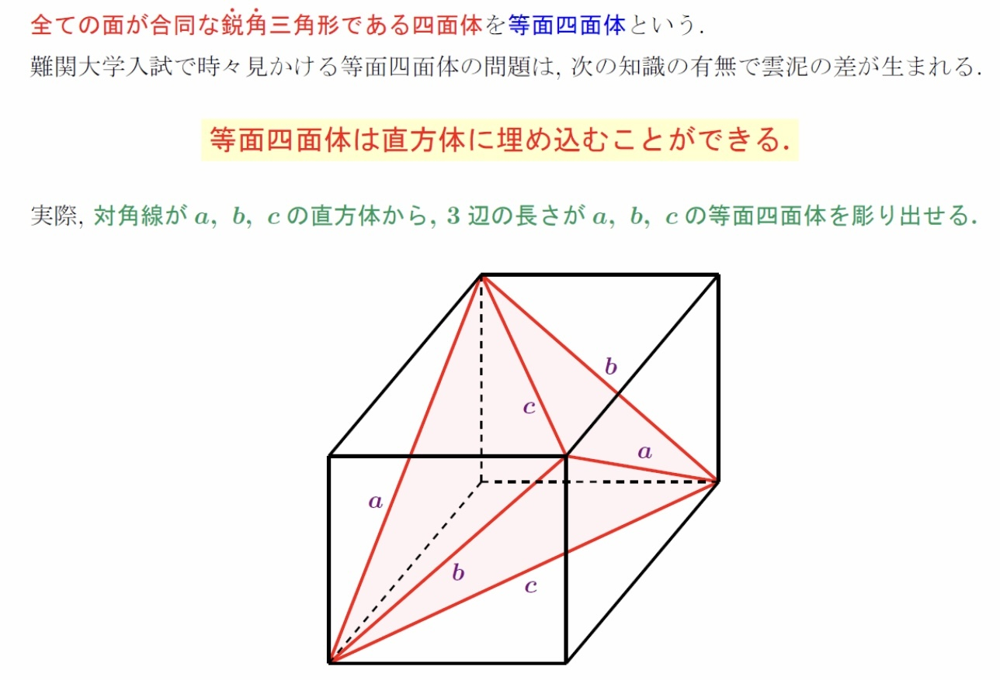
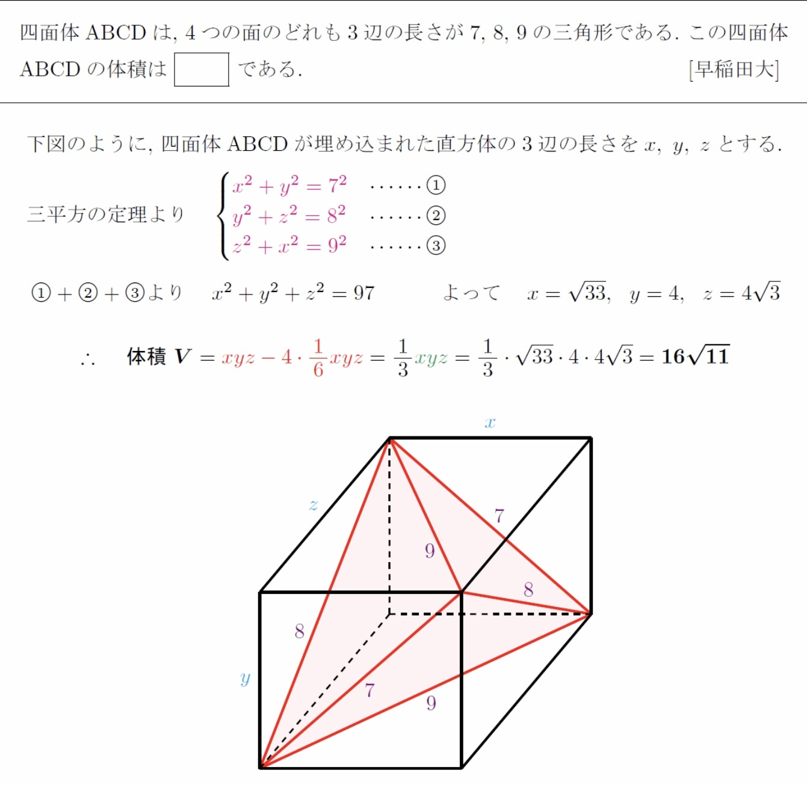
→\(a : b : c = \sin A : \sin B : \sin C\)
→円周角になりうる
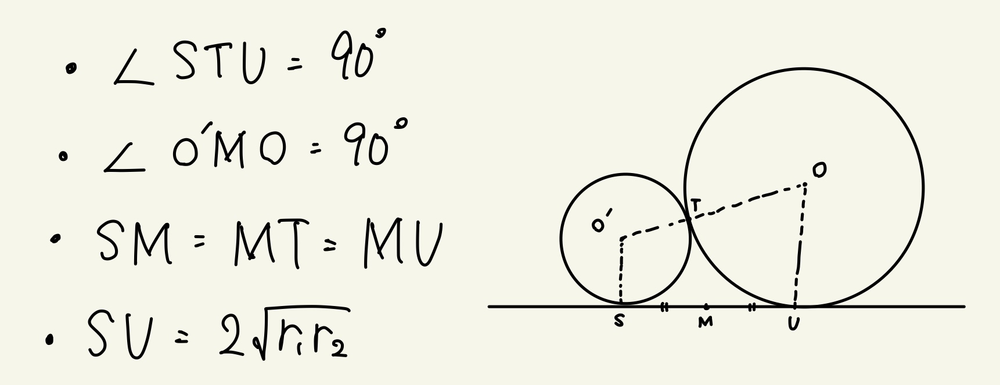
→展開図を使う
→傾きを用いて表す（三平方の定理を使って）
→2018年東北大理系数学第4問(1)
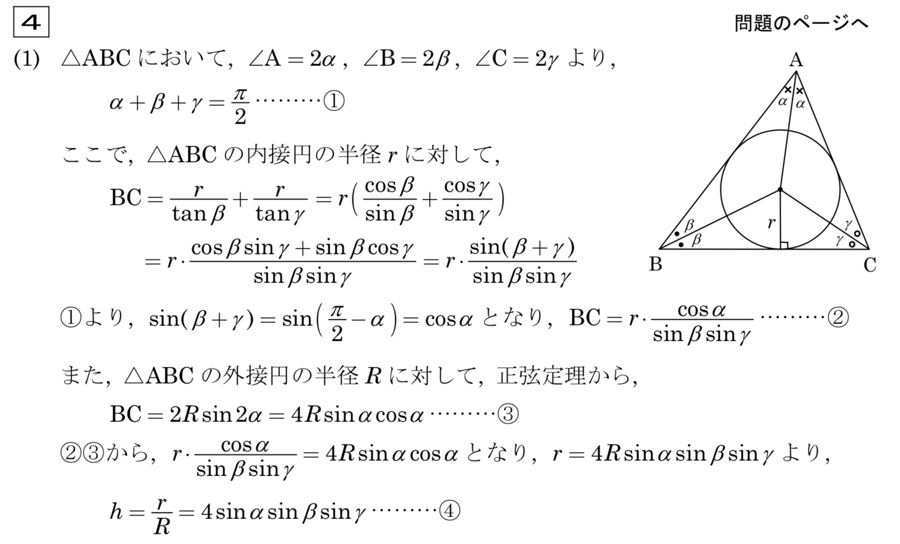
→2通りのやり方を知っておく。FGの例題132と例題133を参照。
→FG例題137はいい確認になる
→正領域・負領域の考え方が利用できる（FG数II3章例題112）
→\(\displaystyle\frac{{}_nC_{k+1}}{{}_nC_k}\) を考える（cf 離散変数の最大最小）
→経路図の導入は検討できるようにしておく
例：東大文系2019年第三問
→桁ごとに計算するとスムーズ
→どこから連続するかで場合分けする
→\(a \leq b \Leftrightarrow a < b + 1\) という同値関係により等号なしに帰着させる
→全体から通るものから引く
[鉄則 2変数に対する等式・不等式の条件]
→2変数に対する条件は、領域で考える。（重要）
→\(A \subset B\) かつ \(B \subset A\) を示す
例題
https://examist.jp/mathematics/class/set-soutou-syoumei/
→「または」「少なくとも」「無理数」「無限に存在」「素数となる」